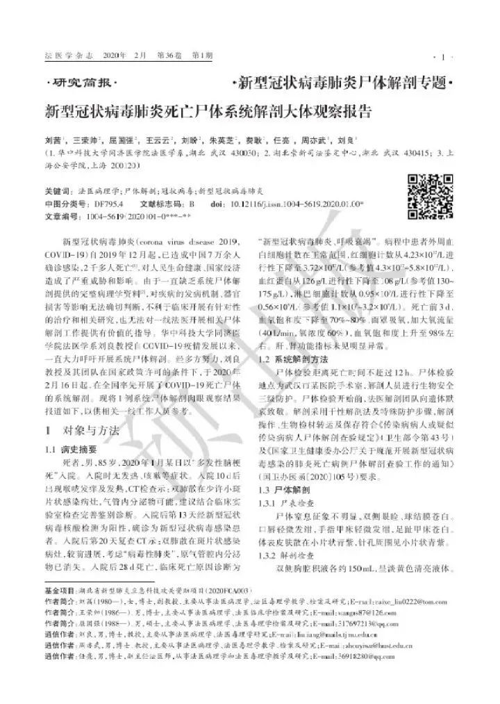

全国第一、二例新冠肺炎遗体解剖完成，尸检为何如此重要？
原文链接 备份链接 “病理诊断是疾病诊断的金标准”2月16日凌晨3点50分，全国首例新冠病毒肺炎患者遗体解剖工作在武汉市金银潭医院顺利结束，由华中科技大学同济医学院法医病理学教授刘良及其团队完成，14小时后，他们又完成了第二例遗体解剖 …
2月28日，《法医学杂志》发布了《新型冠状病毒肺炎死亡尸体系统解剖大体观察报告》。这是新冠肺炎爆发以来的首例完整的尸体解剖。该例尸检的参与者刘良曾经说过：“解剖的必要性之一，就是要弄明白这个病毒是通过什么机制让肺受到损伤的。如果死亡病例一直都没有进行解剖，基本上就搞不清楚对手打击你的方向，就容易茫然。”但在专业人士的眼里，相比2003年SARS，新冠肺炎的第一例尸检却姗姗来迟。

记者｜严岩
尸检的价值
2月15日晚上9点，法医刘良接到了金银潭院长张定宇的电话。终于，有一例新冠肺炎患者的遗体可供解剖。刘良是华中科技大学同济医学院法医学系教授，早在1月22日他就公开发文，强调对新冠患者进行病理解剖的必要性：“死亡病例上千，尚无一例病理解剖。病理学是疾病诊断的金标准，早一天做至少可以多救几个人吧。”
而从呼吁到真正予以施行尸体解剖，中间隔了大半个月的时间。王慧君是2003年主刀首例SARS患者遗体解剖的法医，她在一篇文章《从SARS-CoV到SARS-CoV-2：法医传染病尸体检验的应对与挑战》中提到，同为冠状病毒的SARS早在首例死亡病例出现后不久就开展了尸体检验，检验报告和病理发现一经发布，即为指导临床治疗提供了有效帮助。而此次新冠肺炎病亡人数已逾数千例，却依然缺乏关于这个疾病尸体检验的系统报道，此次的尸检工作确有缺位。
刘良也曾撰文指出SARS期间病理学的价值体现，“刚开始时，专家们都认为衣原体是其病原体，直到对 SARS死者解剖后检见病毒包涵体，且肺泡隔无明显增宽等病理学改变，结合SARS患者病情重、死亡率高、应用抗生素无效，综合判断认为符合病毒性肺炎的病理学特点，这才最终有力支持了广东专家组提出的‘非典病原是病毒，不是衣原体’的论断。”

而目前新冠肺炎的临床治疗方面确实出现了一些尚待解释的问题。有说法称，呼吸内科医生与ICU医生在临床上存在一个争议：是否有必要对患者做早期气管切开进行辅助呼吸？这个问题的答案，就需要明确患者肺部出现痰栓的成因。还有一些病人从轻症到危重症的转变过程相当迅速，这些问题也许可以通过病理解剖知道，到底是由新冠病毒单独造成的，还是由人体免疫细胞在抗击新冠病毒时候共同作用造成的。
因此系统性的尸检就显得尤其必要——通过对死亡个体的解剖可以直观地观察各组织器官，也有助于发现病毒感染后机体病变的性质、部位、严重程度等。通过尸检，可能更加了解这个疾病的死亡机制。
现阶段，遗体解剖到底有多难？
既然SARS期间已经证明了做遗体解剖的必要性，那为何疫情发展至今才刚开始做？
曾在2003年非典期间主导首例SARS患者尸检的王慧君在文章中提到，“解剖间的设施要求，可能是在武汉迟迟不能完成尸检的掣肘问题之一。如果拘泥于苛刻的条件要求，全国大概只有北京地坛医院的解剖间能够满足。但即便是这个解剖间也因为维护的原因目前尚未见启用。”
“我们医院过去也有解剖间，后来因为诸多原因几乎不用了。”北京佑安医院病理科医生王欣欣告诉本刊。北京佑安是一家三甲传染病专科医院，也是此次北京市针对新冠肺炎的首批定点医院之一。“现在新冠肺炎这种烈性传染病，别说是解剖了，哪怕是做咽拭子的病毒扩增检测，都要求在P2级别的生物安全实验室进行，尸检所需的解剖间至少也得这种级别。这种级别的解剖间维护成本太高，用的就少。”
解剖间维护费高并不必然导致解剖间的“闲置”，更根本的原因与其使用率低有关。《中华医学杂志》2011年刊登了一篇中国各地尸检解剖率差异的文章，作者是病理学家朱明华。他提到，“尸检在临床医学、流行病学和公共卫生学的发展中发挥独特的作用。尸体解剖的普遍程度，在一定意义上反映了一个国家的科学文化发展水平。但过去几十年间，全世界范围内的尸检率一直在下降。中国在1950年到1970年之间的尸检率最高，此后尸检率持续下降。”下降的其中一个原因和现在紧张的医患关系有关。“医疗环境变了，过去临床上患者死因不明，大夫对治疗过程又有疑惑，为了增加对疾病的了解，会积极动员病患的家属去支持医院进行尸检。现在，医生则尽量想避免与患者产生矛盾。”王欣欣对本刊说。

《非自然死亡》剧照
具体到此次新冠肺炎的尸检，王慧君提到，“此次尸检缺位相关的议题非常复杂，不仅仅牵扯到解剖间的设施要求，解剖间的污水排放，空气净化和消毒都得一体化安排妥当。”
事实上，刘良团队最终是在一个临时改造的医院负压手术室完成了遗体解剖。
3个多小时的首例尸体解剖
接到张定宇电话后，刘良迅速安排团队成员，一同前往金银潭医院。 晚上9点接到电话，凌晨1点尸检才正式开始。在刘良团队等待的过程中，金银潭医院正快速将一间小手术室改造为解剖间。符合传染病解剖的空间要求不少，最好是一个带负压的空间，排水也得提前做好准备，否则可能对地面、甚至地下水有影响。而且为了保证室内没有任何血液、组织残余物的污染，必须采用干性解剖。
与普通尸检相比，新冠肺炎患者的遗体依然存在传染性，因而刘良团队做的防护级别更高——戴三层手套，两层口罩，帽子也有三层，最后是护目镜加上防护屏。至于身上的防护服，密封性也更高，不透风不透气。参与解剖的人把全身暴露的位置都给封闭了，才算防护到位。
尸检开始后，穿着隔离服的刘良，不到10分钟就汗如雨下。防护服内的衣服湿透了，身体觉得有点冷，加上呼吸也不够通畅，眼镜与护目镜雾气朦朦。刘良视线模糊了，感觉自己像高原反应似的，出现了心慌头晕低血糖的症状。一些平时轻松上手的步骤，由于有点缺氧，每缝一针就得大喘气，腰也开始不舒服。再加上饥饿感的袭击，整个过程进行得比往常慢很多。他过去做一例解剖手术只需要1个小时，而这一例新冠肺炎的遗体解剖持续了3个多小时。直至凌晨3点50分，首例新冠患者的解剖才算结束了。
首例尸检报告对临床治疗有用吗？
12天后，刘良等人发布了《新型冠状病毒肺炎死亡尸体系统解剖大体观察报告》，这是1例尸体解剖肉眼观察结果的报告。报告显示，逝者为一名85岁男性。2020年1月某日以“多发性脑梗死”入院。入院时无发热、咳嗽等症状。入院10天后出现喉咙发痒及发热。入院后第13天确诊为新型冠状病毒感染患者。入院后28天死亡，临床死亡原因诊断为“新型冠状病毒肺炎、呼吸衰竭”，死亡前3天，血氧饱和度下降至 70%~80%。刘良等人从此例解剖大体观察中发现：肺部纤维化及实变没有SARS导致的病变严重，而渗出性反应较SARS明显。

对临床医生来说，这些信息有什么价值呢？
丁仁彧是辽宁支援湖北重症医疗队的领队，在武汉人民医院参与100多名重症病人的救治。他告诉本刊：（尸检）提示局部的一些肺泡的损伤，是病毒先侵袭患者的肺泡上皮细胞。结合之后病毒还会不断复制，它的一些自身的蛋白或者RNA也会对机体造成进一步打击，这是所有病毒的特点，只不过这个病毒比较可怕之处在于它攻击的部位太深了，是肺组织的最小结构，肺泡。因为它结合的受体ACE2主要在肺泡上皮细胞表达。这就是它的病理生理机制，可以部分解释临床过程以及影像学特点。这些只是一般的规律，在此基础上，不同个体之间会有所差异。
“我注意到尸检里边提示说，它是病毒侵袭，侵袭之后激发患者机体的一些免疫反应，里面比较突出就是淋巴细胞的浸润。我在想这个也是值得我们反思的。淋巴细胞浸润是宿主针对病毒的免疫应答，为了清除病毒。但是如果这种应答处于亢进状态，比如有的尸检报告提示CD8、Th17等是过度活化状态，那就可能在清除病毒的同时造成肺组织局部或者全身失控的炎症反应。如果真是这样的话，那我们免疫调节药物应该怎么用？比如说我们现在的治疗方案‘日达仙’或者‘胸腺肽’的应用很常见，那么用的时间点，用的人群，如何来把控？”丁仁彧说。
但单独一例尸检能提供的信息非常有限。丁仁彧告诉本刊：“死亡的病人大概是2700多例，尸检只做了十几例。从我们的角度来看，尸检的意义毋庸置疑。但我不认可的说法是，这一例尸检能产生什么颠覆性结论。而且，尸检一定有个体化差异的问题，年龄大的患者做尸检和二三十岁年轻人的尸检，他们的病理生理改变也许是截然不同的。对我们来说，你观察每一个尸检报告的时候，你一定要看这个病人的病史。他是在什么情况下死亡的？他发病了多长时间死亡？他进没进行过高流量吸氧，进没进行过无创呼吸？这些都是至关重要的问题。”另一位三甲医院的一线临床大夫也提出了比较近似的观点，“这个尸检报告中的病例是一个85岁的老人，有脑梗的病史，但除此之外，报告没有提到他是否有其他基础疾病，信息太少了。包括比较重要的一点，关于这个病例有肺的弥漫性的病变，住院后是怎么治疗的？这些信息对临床医生的判断很重要，只是告诉我们最后形成病理改变，那对我来说，这个形成的病变完全没办法分析。”

《法医秦明》剧照
不过，自2月16日至2月24日，刘良团队完成了9例尸检，上海瑞金医院团队完成了2例。所有捐赠的遗体年龄段偏大，60岁以上居多，最小的一例52岁。目前刘良团队与华中科技大学同济医学院病理系主任王国平一同合作，已有3例病理学上的初步结果，尚待进一步的深入检查，“王国平教授他们在抓紧做切片，染色观察、免疫组织化学等。尸检病毒的信息也有单位在做，最终的病理诊断需要结合9例一起看才比较全面。”
刘良等人告诉本刊，从系统的病理学研究的角度来说，依然希望更多的遗体捐赠，但实际情况是很难做到的。
（感谢记者王珊、张从志对报道的帮助）
作者档案

严岩
如果你熟悉药物的临床试验流程和入组设计，请联系我！添加好友烦请做介绍，谢谢
26分钟前


三联生活周刊
个人微信：roseisnotred
⊙文章版权归《三联生活周刊》所有，欢迎转发到朋友圈，转载开白请联系后台。未经同意，严禁转载至网站、APP等。
点击下图，下单新冠特刊
「准备复工」

*点击阅读原文，进入周刊书店，**购买**【新冠肺炎专刊组合】*
严徽因
投喂一碗热热热干面！
长按二维码向我转账
投喂一碗热热热干面！
受苹果公司新规定影响，微信 iOS 版的赞赏功能被关闭，可通过二维码转账支持公众号。
原文链接 备份链接 “病理诊断是疾病诊断的金标准”2月16日凌晨3点50分，全国首例新冠病毒肺炎患者遗体解剖工作在武汉市金银潭医院顺利结束，由华中科技大学同济医学院法医病理学教授刘良及其团队完成，14小时后，他们又完成了第二例遗体解剖 …
原文链接 备份链接 “给做尸检的专家团队一些时间， 让他们潜心检查、研究，不要过分打扰他们” 华中科技大学同济医学院法医学系教授刘良就新冠肺炎患者尸检接受央视采访 图片来源：央视截屏 备受瞩目的首份新冠病毒肺炎逝者遗体解剖报告出炉，2 …
原文链接 备份链接 新冠肺炎逝者遗体解剖已完成11例，据首份观察报告，肺部深处多粘液的情况，对临床治疗的化痰、排痰方案决策有帮助，对多器官的深入影响仍待进一步检测 2020年2月初，武汉金银潭医院隔离病区内，医护人员正在给新冠肺炎患者做治 …
原文链接 备份链接 *************▲*************刘良和他的团队，右二为刘良。 （校方供图/图） 全文共1927字，阅读大约需要5分钟。 临床治疗上，如果粘液没有被化解的情况下给患者单纯给氧，可能达不到目的，有时 …
原文链接 备份链接 记者/韩谦 魏晓涵 *编辑/石爱华宋建华* 进行病理解剖的刘良团队 经历了一个多月的等待后，华中科技大学同济医学院法医病理学教授刘良带领的团队，于2月16日凌晨3点50分，完成了第一例新冠肺炎死亡病例的尸体解剖。 截 …